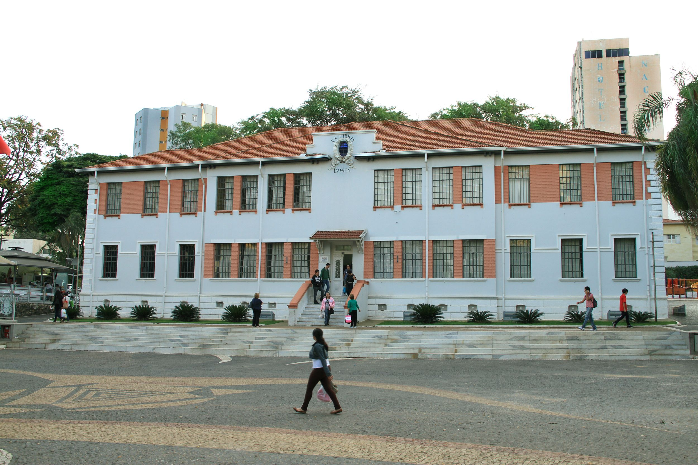
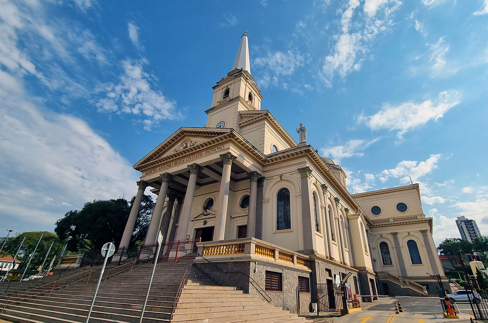
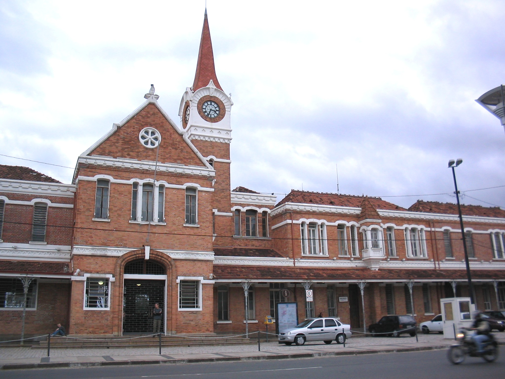
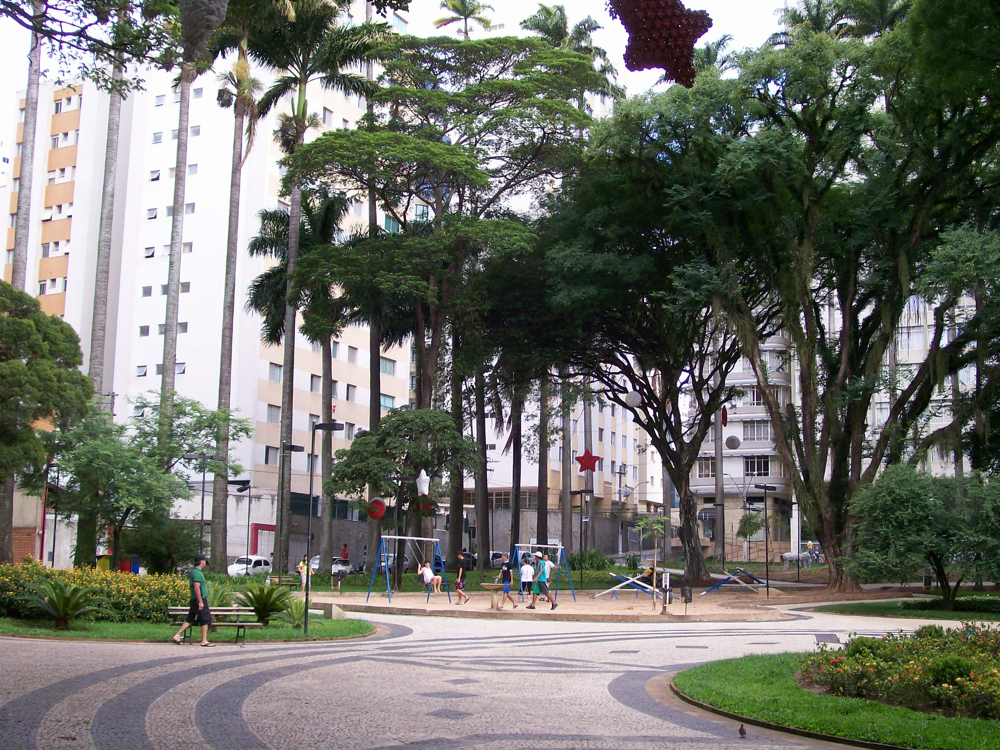
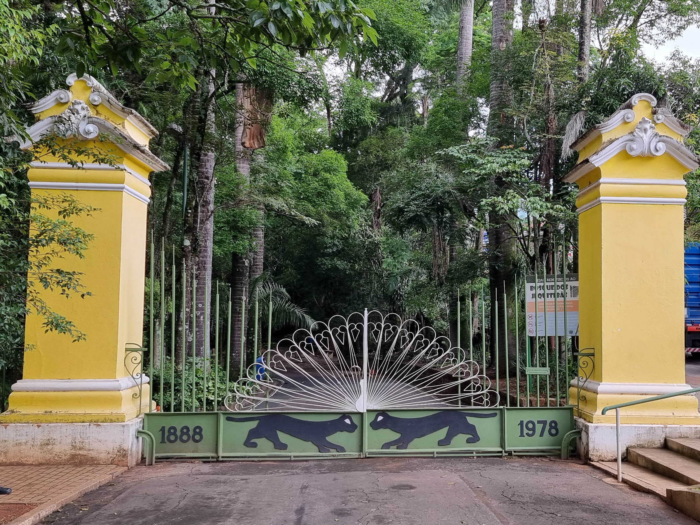
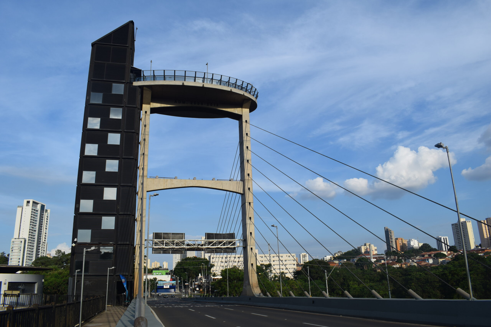
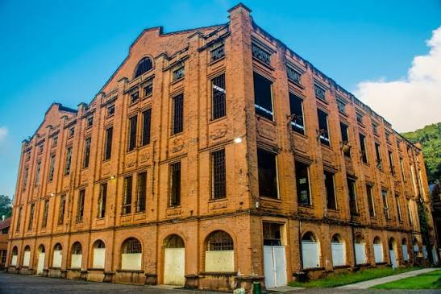
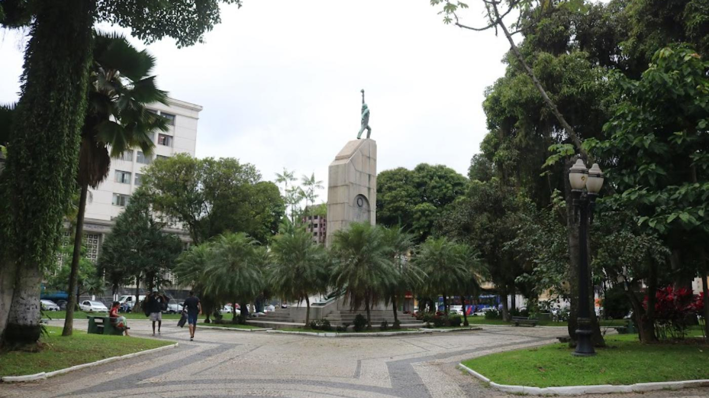
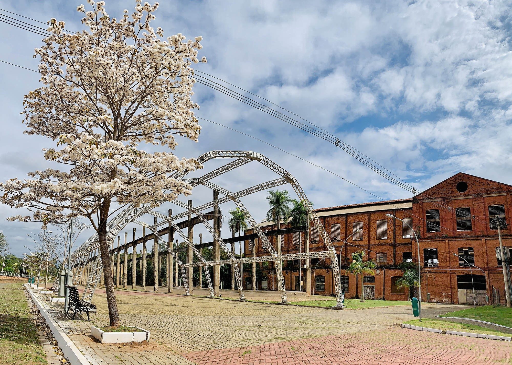
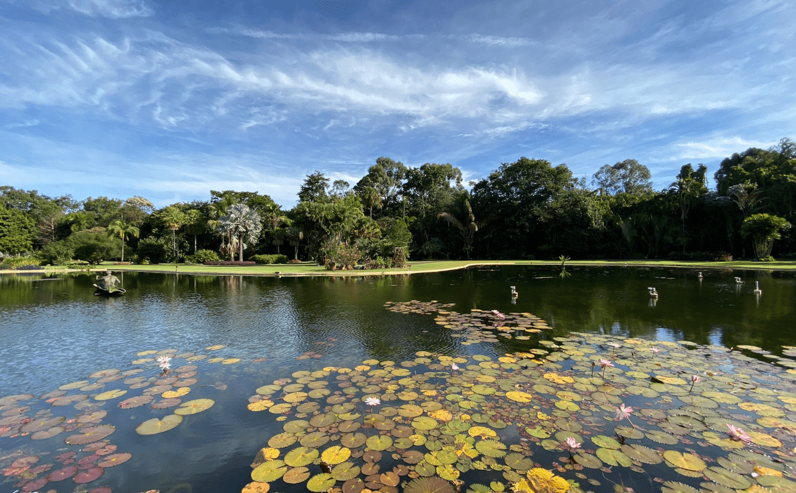

Conheça as cidades
Use as setas ou escolha uma cidade para ver as informações.
Americana
Uma cidade com parques, espaços culturais e áreas verdes para visitar.
Pontos turísticos e atrações
- Zoo de Americana: parque com animais e atividades para a família.
- Jardim Botânico: área verde com plantas e trilhas para caminhada.
- Basílica de Santo Antônio: igreja tradicional no centro da cidade.
- Praça Comendador Müller: praça central próxima a importantes construções históricas.
Galeria de fotos




Campinas
Conhecida por seus parques, cultura e construções históricas.
Pontos turísticos e atrações
- Lagoa do Taquaral: parque com lago, áreas para caminhada e lazer.
- Bosque dos Jequitibás: parque urbano com área verde e espaços de visitação.
- Estação Cultura: antiga estação ferroviária que recebe eventos culturais.
- Praça Carlos Gomes: praça arborizada na região central.
Galeria de fotos




Piracicaba
A cidade reúne paisagens do rio, história e espaços de convivência.
Pontos turísticos e atrações
- Rua do Porto: região à beira-rio com restaurantes e opções de passeio.
- Engenho Central: antigo complexo industrial que hoje recebe eventos culturais.
- Elevador Turístico: oferece uma vista do Rio Piracicaba e da cidade.
- Praça José Bonifácio: praça central próxima à Catedral de Santo Antônio.
Galeria de fotos




Santa Bárbara d'Oeste
Uma cidade do interior com parques, praças e locais históricos.
Pontos turísticos e atrações
- Usina Santa Bárbara: espaço histórico ligado ao desenvolvimento da cidade.
- Parque dos Ipês: área verde com espaços para lazer e caminhada.
- Centro de Memórias: acervo e exposições sobre a história local.
- Praça Central: espaço público junto à Igreja Matriz de Santa Bárbara.
Galeria de fotos



Nova Odessa
Uma cidade tranquila, com parques e espaços para conhecer a natureza.
Pontos turísticos e atrações
- Jardim Botânico Plantarum: jardim com coleções de plantas e trilhas para visitação.
- Parque Ecológico Isidoro Bordon: parque municipal com área verde e animais.
- Teatro Municipal: espaço que recebe apresentações e eventos da cidade.
- Praça Central José Gazzetta: praça de convivência no centro de Nova Odessa.
Galeria de fotos


